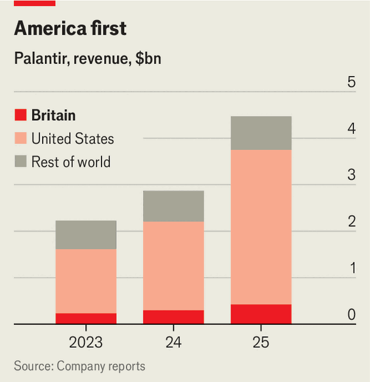

Why everybody hates Palantir
Beyond America, the company risks becoming a victim of its own hype
Aug 20th 2026
IN 2016 PALANTIR, an American software firm, successfully sued the US Army to win a second chance at a contract. A decade on, the fortunes of the company seeded by the CIA’s venture arm, and named after an all-seeing stone in J.R.R. Tolkien’s fantasy epic “The Lord of the Rings”, have changed. Business is booming (see chart). Domestic revenue has more than doubled in a year, to $1.6bn in the second quarter of 2026. The American government accounts for two-fifths of its global business. Despite concerns that AI might eat its lunch, American firms think its software can provide a layer of protection for their raw data, a privacy shield against frontier AI labs like OpenAI and Anthropic.
“I’m struggling with our current popularity,” joked Alex Karp, Palantir’s CEO, on a recent earnings call. If Mr Karp, who once served on the board of The Economist’s parent company, is feeling too comfy, he need only look across the Atlantic.

In July French and German security chiefs announced they would replace a “digital backbone” reliant on Palantir with European alternatives. In Britain, its biggest foreign market, and home to a sixth of its workforce, MPs have urged Andy Burnham, the prime minister, to exercise a break clause in February in a seven-year contract with the National Health Service. Palantir is suing Sir Sadiq Khan, the mayor of London, after he blocked a deal with the Metropolitan Police claiming competition processes were circumvented.
Its loudest critics focus on how Palantir’s tech has helped President Donald Trump’s administration track and deport migrants, and the Israel Defence Forces target Gazans. In a speech on July 30th Robert Jenrick, an MP for Reform UK, a populist right-wing party, claimed that Palantir “reduced discharge delays by 15%”, but that Mr Burnham was considering scrapping it from the NHS because “British Islamists were unhappy”.
Critics also point to the firm’s lobbying: its first British government contract, matching patients to ventilators, came during the covid-19 pandemic for a token fee of £1 ($1.30), after it charmed civil servants over watermelon cocktails. Zack Polanski, the Green Party leader, unfairly notes that Louis Mosley, who runs Palantir’s British arm and its European headquarters, is a grandson of Oswald Mosley, a 1930s fascist leader, and “insists on wearing a black shirt every single time he is on TV”.
“Palantir derangement syndrome”, as the Spectator magazine put it in a recent cover story, is not the only explanation for the backlash against the firm. It has sometimes overstated what its software can do. And it is a lightning rod for a broader anxiety about tech sovereignty, risking a reaction that could deprive Britain of useful software.
No one disagrees that a key problem for the British state is its fragmented data. Police spend most of their time on admin rather than investigating crimes, accessing dozens of systems, each with its own login details. Disjointed data cost lives. A recent official report on England’s maternity care found that patients routinely get lost between services because of poorly integrated tech, and that staff have to write on scraps of paper during emergencies.
Palantir can help solve such problems. Its engineers take vast quantities of scattered data and join them into a single source of truth that non-tech-savvy staff can interact with. The armed forces, for example, are using Palantir’s software to work out which plane is nearest to which target and how much ammunition it has, and to assess military readiness down to the individual nut, bolt and screw.
In Bedfordshire the firm’s software helped police review 62% more child-protection incidents over an eight-day trial period, and convict a Romanian criminal gang by trawling through around 100,000 messages—something that would previously have taken months. Responding to Sir Sadiq’s decision to block the Metropolitan Police contract, Sir Mark Rowley, the Met’s commissioner, said the lost productivity will mean the force must cut hundreds of front-line staff.
A contract won in 2023 to build what the NHS called its federated data platform (FDP) has received most attention. Over seven years, the platform is expected to cost £1.1bn, or enough to run the NHS in England for two days. Palantir’s fans believe this is money very well spent.
Trusts in charge of hospitals can use the software both for back-office functions and to run tools on top of it. It can flag when a patient is behind on the steps required for cancer treatment, say, and let staff schedule appointments or update a record. Some trusts and regional health boards, such as Greater Manchester, can already do this, and more, without Palantir. But it is a huge upgrade for less tech-savvy parts of the NHS that have only recently stopped using paper records.
The FDP also enables different parts of the NHS, which use distinct data systems and structures, to link up. Tom Bartlett, who led the NHS team that helped develop the platform, is most excited about how it will allow parts of the health system to share innovations. He recently watched a nurse and a paramedic at a hackathon build a prototype of a tool their service needed in just two days. He also believes the FDP will help make the NHS AI-ready: the software provides a structured layer for AI agents or applications to run on.
The case for using such technology to improve productivity in cash-strapped public services is strong. However, Palantir and its advocates weaken it by overstating what the software has achieved.
In an interview with The Economist, Mr Mosley points to 110,000 additional operations in the 40-odd trusts using the software for in-patient scheduling, figures derived from an NHS dashboard promoting the FDP. Yet the impressive figures did not disaggregate the software’s effect: they showed all additional operations since 2020, including those to catch up with the backlog from the pandemic. In July Britain’s statistics watchdog reprimanded the NHS for using them without a caveat. “You can’t say that the 110,000 operations only happened because of Palantir,” admits Mr Mosley, when pressed on the figures. But “directionally, it’s very, very clear that the software is having an impact.”
Mr Mosley complains that most acute trusts have signed up to the FDP but do not use it because the NHS doesn’t mandate it: “You have a volunteer army, not a conscript army,” he says. But four days before Mr Jenrick’s speech, a report by the Health Foundation, a think-tank, found that trusts using Palantir’s discharge tool cut delays no faster than those that did not. Nor does low uptake explain why Chelsea and Westminster, a trust in west London, has been the best trust at using the platform to reduce waiting lists, yet its lists have still risen faster than almost any other’s.
Similar marketing hype surfaces in defence. Sir Tom Copinger-Symes, a recently retired lieutenant general, says that Palantir is “world-leading” at turning a complex military mission into actionable data flows. His concern is the way its marketing can present the firm as a “full-solution AI company rather than one supplier in a much broader supply chain”. The government has sometimes encouraged the same impression. A “strategic partnership” with the Ministry of Defence announced last September is less sweeping than it sounds: “a complete fantasy”, says one former official, pushed by government advisers who thought it would “look good”.
Such salesmanship, abetted by government, has helped thrust Palantir into the centre of a panic about “tech sovereignty”, the loosely defined but real sense that Britain lacks control over critical technology at a time when America is no longer such a predictable and dependable ally. On this front, though, many of the concerns directed specifically at Palantir are misguided.
The NHS recently apologised after failing to disclose that some Palantir staff would be able to see identifiable patient data, adding to fears about the 2018 Cloud Act, which gives the American government the power to request data from tech companies even when the data are hosted by foreign subsidiaries. In practice, there seems little chance that Palantir could be compelled to disclose such data: the information stays within the trust, which remains the data controller. Engineers lack the legal permission or access to browse patient data for secondary purposes.
Another fear is a “kill-switch” moment, such as when the American government banned the use of Anthropic’s latest models for non-Americans. But if dependence on American tech giants is the worry, there are more alarming examples. The NHS relies on Microsoft for email and other communications (like Microsoft Teams), cloud and, increasingly, AI: it has just bought 500,000 Microsoft Copilot licences. Oracle, another American tech giant, is its largest supplier of patient records. Palantir “wouldn’t even make my top 100 of the things I would worry about”, says Ben Moore, until last year the procurement adviser to Britain’s defence secretary.
More broadly, controversy around Palantir is a distraction from an uncomfortable truth: there are few good British or other European alternatives to the top American tech companies. The state can do some things itself. Last year the housing ministry replaced a Palantir refugee-matching system with its own, saving “millions of pounds” in running costs. In June France said ChapsVision, a domestic AI firm, would take over the contract with DGSI, the country’s internal-security agency—but not before 2028. For other things, it needs American suppliers.
If Britain exercises a break clause for the FDP, as a select committee of MPs has recommended, it will be nigh-on impossible to find a consortium to replace Palantir before next February. “All the other companies are miles behind,” says Mr Bartlett. On the battlefield, inferior tech could get British soldiers killed, argues Sir Tom. Colleagues, in love with American tech, should be careful not to buy its “full stack”, he suggests. But “would we buy the third-best tank just because it’s British?” ■